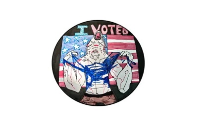

SQL
I have experience writing MySQL queries to gather and clean data needed to answer client business questions.
I have experience writing MySQL queries to gather and clean data needed to answer client business questions.
I also have experience using Python to connect with REST APIs, then using Pandas to clean, transform, and analysize the data.
For the last year, I've been working with Power BI to create dashboards and reports for executive leadership to bridge the business's reporting gaps.
With crafted visualizations and knowledge of the raw data, I've presented insights and possible solutions to clients and stakeholders, both on-site and remotely.

An exercise evaluating comparative ratings of roles in a social deduction game, using Pandas, pyodbc, and Microsoft Access.
A visualization exercise using Pandas, Matplotlib, and Seaborn so visualize K-pop data to answer specific questions about the industry.
A Python program to simulate the group stage and playoff rounds of the 23/24 UEFA Champions League, then write the results to a .csv and display them with Matplotlib.
A data cleaning exercise using Pandas to make Austin 311 requests more usable for analysis. Austin make their 311 requests publicly available, and data was queried via BigQuery.
An exercise to get a feel for using machine learning tools from scikit-learn to predict Pokemon types based on their stats.